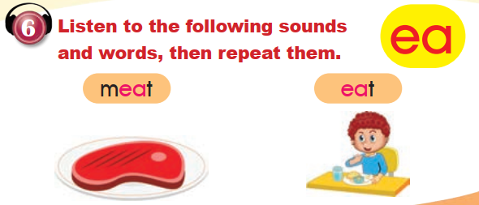

Vocabulary and Explanation
My Lovely School · words and phrases actually used in Lesson 3. Fixed reference tables keep the two books’ page references visible.
1. School places
| English | Arabic meaning | Source |
|---|---|---|
| school | مدرسة | Both books, pp. 9–11 |
| classroom | صف دراسي | PB p. 9; WB pp. 10–11 |
| gym | صالة رياضية | PB pp. 9–10; WB p. 10 |
| music room | غرفة الموسيقى | PB pp. 9–10 |
| art room | غرفة الفنون | PB p. 9; WB pp. 9–10 |
| library | مكتبة | PB p. 9; WB p. 9 |
| laboratory | مختبر | PB p. 9; WB pp. 9, 11 |
| playground | ساحة اللعب | PB p. 9; WB p. 11 |
| cafeteria | كافتيريا | PB p. 10 |
| Sports | التربية الرياضية | PB p. 9 |
| Science | العلوم | WB p. 9 |
| poster | ملصق / لافتة | PB p. 10 |
| desk | طاولة دراسية | WB p. 10 |
2. Houses and other places
| English | Arabic meaning | Source |
|---|---|---|
| house | منزل | WB pp. 9, 11 |
| living room | غرفة المعيشة | WB p. 11 |
| bedroom | غرفة النوم | WB p. 11 |
| kitchen | مطبخ | WB p. 11 |
| room | غرفة | WB pp. 10–11 |
| restaurant | مطعم | WB p. 11 |
| toy shop | متجر ألعاب | WB p. 11 |
| market | سوق | WB p. 11 |
3. Locations and quantities
| English | Arabic meaning | Source |
|---|---|---|
| upstairs | في الطابق العلوي | PB pp. 9–10 |
| downstairs | في الطابق السفلي | PB pp. 9–10 |
| on the left of | على يسار | PB p. 9; WB p. 10 |
| on the right of | على يمين | PB pp. 9–10 |
| between | بين | PB p. 10; WB p. 11 |
| there is | يوجد | PB p. 9 |
| there are | يوجد للجمع | PB p. 9; WB p. 10 |
| how many | كم | PB p. 10; WB p. 10 |
| two · 2 | اثنان | PB p. 9 |
| twelve · 12 | اثنا عشر | WB p. 10, printed numeral |
| twenty · 20 | عشرون | PB pp. 9–10 |
| twenty-five · 25 | خمسة وعشرون | WB p. 10 |
4. Actions and preferences
| English | Arabic meaning | Source |
|---|---|---|
| can | يستطيع / يمكنه | PB p. 9; WB p. 10 |
| prefer | يفضّل | PB p. 9 |
| favourite | مفضّل | PB p. 9; WB p. 10 |
| show around | يرشد في جولة | PB p. 9 |
| read | يقرأ | PB pp. 9, 11; WB p. 9 |
| draw | يرسم | WB p. 9 |
| sing | يغنّي | PB p. 11 |
| dance | يرقص | PB p. 11 |
| count | يعدّ | PB p. 11 |
| play | يلعب | PB p. 11 |
| share | يشارك | PB p. 11 |
| make | يصنع / يكوّن | PB p. 11 |
| interesting | ممتع / شيّق | PB p. 9 |
| fun | ممتع | PB p. 11 |
| book | كتاب | PB p. 9; WB pp. 9–10 |
| picture | صورة | WB p. 9 |
| ball | كرة | PB p. 11; WB p. 9 |
| block | مكعب | PB p. 11 |
| friend | صديق | PB p. 11 |
5. Polite language and phonics
| English | Arabic meaning | Source |
|---|---|---|
| help | يساعد | WB p. 11 |
| please | من فضلك | WB p. 11 |
| of course | بالتأكيد | WB p. 11 |
| thank you | شكرًا لك | WB p. 11 |
| meat | لحم | PB p. 11 |
| eat | يأكل | PB p. 11 |
6. Language focus
One place or more than one
Use there is for one thing and there are for more than one. These examples are quoted from the lesson:
Is there a laboratory?
There are twenty classrooms and a playground.
There are two laboratories downstairs.
Location and preference
Upstairs and downstairs describe floors. Left, right and between describe position. Use can for an ability and prefer or favourite to talk about what you like most.
It's upstairs.
It's downstairs.
I prefer the library. I can read interesting books.
The letters ea
The lesson highlights ea in meat and eat. In these two words it represents the long /iː/ vowel. This pronunciation note is editorial; the original recording was not supplied. Do not assume every spelling of ea has this sound.
